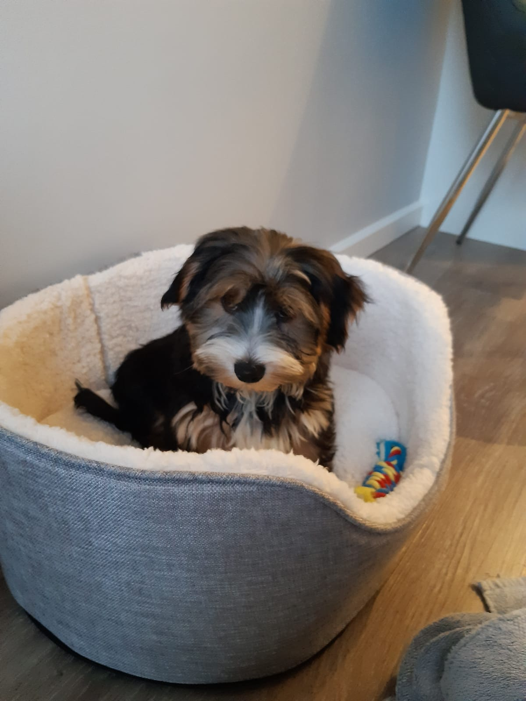

About Me
My name is Anthony, I was born and raised in Manchester and I currently work in finance as a Assistant Financial Controller.
I have a strong desire to switch things up and change careers as I am not getting a lot of job satisfaction out of my current career path. I have always been good at problem solving which I have found lends itself quite well to working with and creating code. I was introduced to coding in the past by inadvertantly using html to design and create online invoice templates. I have since self-studied by using online resources such as The Odin Project and Codecademy


Qualities
- Excellent attention to detail
- Problem solving
- Can work well solo and in a team
Hobbies and Interests
- Jiu-Jitsu
- Listening to and recording music
- Going to the gym
- Indoor rock climbing
- Learning Spanish